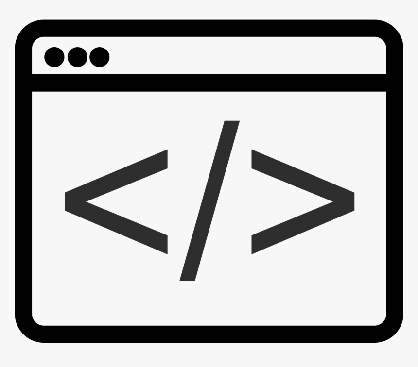
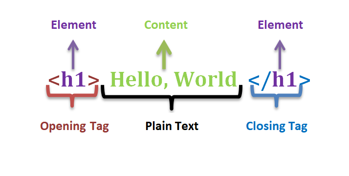

HTML aka (hypertext markup leanguage) is a web technology that gives meaning and purpose to a webpage. It helps by defining and organizing your content; such as making headers, images, fonts and building all the moust important parts of a website. HTML comes in two shapes and they are tags and attributes. HTML was first created by Tim Berners Lee, Robert Cailliau and others starting in 1989. To put into context; hypertext means that the document contains links that allow the reader to jump to other places in the document or to another webpage completely.Also, the markup leanguage is a way for computers speak to each other to control how phragraphs are presented. To do this HTML uses tags and the attributes.
First let me start by explaining the anatomy of a tag:
As you can see html tags have a opening GREATER than and Less than symbol(crocodile) tag as well as a Closing one. 90% of all the available tags require you to open and close them. Next, we will discuss elements and attributes; A HTML element is the entire snippet associated with the tag, while an attribute is a specific propperty of a tag. The H1 tag is the opening part while the Hello World is the content or whatever it is you wish to say, and finally, the second H1 tag with the slash is the closing point of the element. Heres another example the img tag if we dig deep, we will discover that it contains img witch means image and the "src" attribute witch means Source however, this tag in particular does not require you to close it and within the src attribute you must code the exact place where the png or jpeg image is at. And by the way, you can add a "/" next to the last crocodile so that it will be better executed. Next, within this example we have the alt attribute witch means "alternative text." you can use it just in case the browser that opens your website has problems loading your picture on the viewport.
And so, lets see an example: